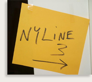

Greetings exalted ones!
I am ever so honored to be holding the giant novelty scissors for the grand re-opening of our website! NYLine.org is your source for news and information on how to participate in the charity line up for Star Wars: Episode III, here in New York City. Everything is leading up to the premiere of the final chapter of our beloved space opera next May, and a time when my existence will be rendered meaningless. That's a goal we're working hard towards, and this website is just our first step into a larger world of geekdom.
One might say that our original site in '99 was a little bit...naked, with our parts showing and that twirly thing in our heads visible to everyone. By '02 we were much improved, but with time even that site got a bit old and rusted. So now we're rolling out this new design, shimmering with golden goodness, twinkling in the sunlight, reflecting our collective love on to the world.
Or something.
As you can see, in the past two years my ability to write coherently has been smashed into who knows what, but that doesn't mean that we have been resting on our laurels. If you recall, the focus of our fundraising in '02 was to donate "fun centers" to local hospitals via the Starlight Children's Foundation. Four of these tv/video/gaming consoles have been installed successfully, accompanied by an inscription from all of us.
You can read more about the fun centers and all sorts of other goodness in our upcoming newsletter, which is something else we're working on! So if you haven't signed up for that (or if you're an e-mail address changeling), join up using the little box on your left.
We are going to do our best to make this the most memorable line up experience in the history of experiences ever experienced. All you have to do is keep checking the site for news, take our survey that will be presented shortly, start pestering your friends/neighbors/droids for charity donations, take some days off from work in advance, and let us know if you have any ideas, problems, or suggestions. Wow, you've got a lot to do, you need a vacation!
And finally, a word of congratulations for the man responsible for everything-webMaster Spell has another baby on the way! So, little Sam can look forward to a padawan in his future. Sure, he might seem young to take on an apprentice, but so was Obi-Wan, and look how that turned out! Wait, don't do that, actually. CONGRATS TO MR. AND MRS. SPELL!!
So that's it, and this is it! We're going in and we're going in full throttle!